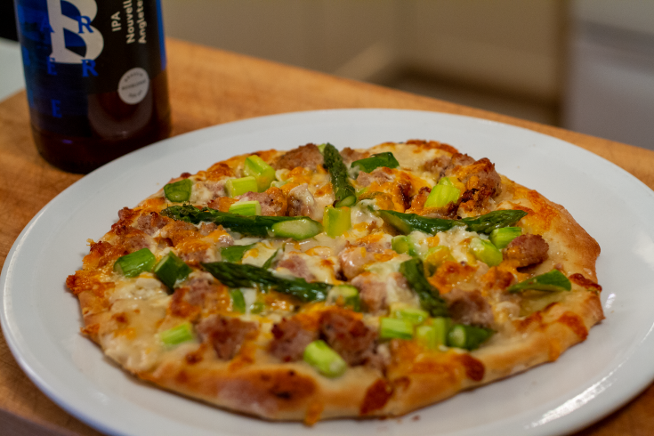

Pâte à pizza à la bière de La Barberie

Description
Cette pâte à pizza avec la bière se distingue par son goût de houblon. Merci aux boys de La Barberie, la première entreprise coopérative micro-brassicole au Québec, pour cette sublime recette !
Ingrédients
- 250 ml (1 tasse) de bière blonde au Chardonnay La Barberie
- 15 ml (1 c. à soupe) de levure
- 15 ml ( 1 c. à soupe) de sucre
- 750 ml (3 tasses) de farine
- Une pincée de sel
- 30 ml (2 c. à soupe) d’huile d’olive
Marche à suivre
- Dans une casserole, chauffer la bière légèrement (on veut qu’elle soit juste un peu plus chaude que la température pièce)
- Incorporer à la bière la levure et le sucre et laisser la levure gonfler (environ 5 minutes)
- Dans un grand cul de poule, verser 625 ml (2 ½ tasses) de la farine avec le sel et faire un trou dans le centre
- Verser le mélange de bière, sucre et levure gonflée
- Mélanger avec le bout des doigts jusqu’à l’obtention d’une pâte
- Fariner légèrement une surface propre de travail et pétrir la pâte au moins 10 minutes
- Quand la pâte commence à coller pendant l’étape du pétrissage, ajouter un peu de farine
- Une fois la pâte bien pétrie, déposer dans un cul de poule bien huilé, couvrir le bol d’un linge humide et laisser gonfler la pâte au moins 75 minutes
- Couper la pâte en deux
- Étirer la pâte avec les mains en forme circulaire (n’hésitez pas à utiliser un rouleau à pâte ou une bouteille de bière vide)
- Déposer la pâte sur une tôle à pizza huilée
- Garnir avec les garnitures de son choix
- Cuire au four préchauffé à 500°F pendant 8 minutes
Les recette proviennent du site de bob le chef. Ce projet est uniquement à titre éducatif
s